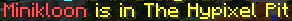

|
The Pit 0.3.9 - Tiny Bugpatch
|
|  |
| A screenshot of a friend list indicating that Minikloon is in the Hypixel Pit, rather than simply "a Prototype game". |
| Release Date | Mar 11th, 2019 |
Forums Approval*Forums approval is based on the number of positive reactions on the update's forum post divided by the number of total reactions.
Reactions only count if they were added in the first month of the post being up. | 98.6% |
| Forums Author | Minikloon |
| ← Corals Map —
Events Extravaganza
→
|
The Pit 0.3.9 was a small update to the Hypixel Pit. It primarily focused on integrating the Pit with Hypixel's other systems, and featured some minor bug fixes.
New features added with the update include:
- Players are now able to create parties and use party commands, such as /p promote [username] and /p warp, while in the Hypixel Pit.
- Players can now join the Hypixel Pit while being in a party without having to be the party leader. If the party leader changes server, all members of the party will still be automatically warped to their server.
- Players in parties who join the Pit will be sent to a server containing at least one party member.
- Backend response texts are adapted to the Pit's response format of a bolded exclamation, followed by more detailed information. (e.g. "SERVER FOUND! Sending to mini17U (your party is there!)")
- The Pit is now considered to be its own game by the Hypixel backend, rather than a Prototype game.
- Added the /play pit command.
Balance changes:
Bug fixes:
- The Vampire perk's regeneration now properly refreshes on kills.
- Using certain launchers no longer causes the player to be returned to spawn for being out of the map.
- One of the Care Packages on the Corals map no longer spawns in midair.
- Added some missing barrier blocks on the Corals map.
- The Robinhood enchantment no longer targets players in spawn.
- The Telebow enchantment's cooldown now applies properly.
- The TNT enchantment's TNT no longer breaks Care Packages.
- The Gold Bump enchantment now applies on assist.
- The Steaks enchantment no longer prevents the user from picking up items.
- The Snowman Army enchantment's snowmen now despawn when the user returns to spawn.
- The Wolf Pack enchantment's wolves now despawn when the user returns to spawn.
- Fixed XP display on leaderboards[how?].